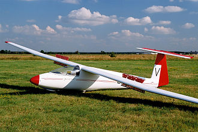

El PZL SZD-30 Pirat es un planeador monoplaza multipropósito de la firma polaca PZL Bielsko, que voló por primera vez en 1966 y comenzó a ser producido en 1967. Fue el primer planeador polaco con cola en T.[1]
diseño y desarrollo -El SZD-30 es de construcción en madera. El ala alta incorpora frenos aéreos en ambas superficies superior e inferior. La sección interna del ala tiene cuerda constante y la sección externa es trapezoidal. La sección delantera del fuselaje de madera está realizada en fibra de vidrio, siendo su sección transversal de 0,4 m2.[2] El tren de aterrizaje principal monorrueda es fijo. La cubierta monopieza tiene abertura lateral. El fuselaje puede ser equipado con radios y equipo de oxígeno. Existen dos compartimentos de equipaje.
